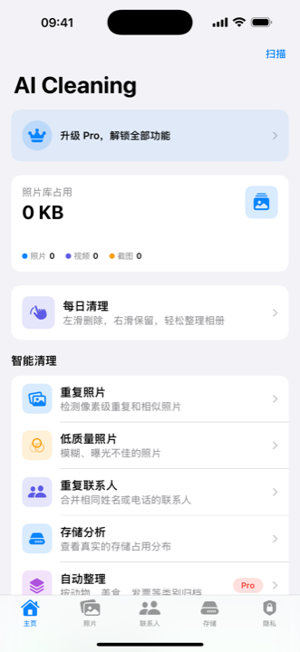

Nettoyeur photo iPhone
Classer les photos avec l'IA avant de nettoyer.
Commencez par Photos pour fusionner les doublons déjà détectés, sans installer d’app. Pour classer aussi documents, reçus et autres contenus, comparez ensuite les neuf catégories d’AI Cleaning avec Pro. Dans les deux cas, vérifiez les images avant de confirmer leur suppression.

Avec l’app Photos
Fusionner les doublons iPhone sans installer de nettoyeur.
Ces étapes utilisent les fonctions intégrées de Photos. Elles suffisent si les copies détectées et la sélection manuelle répondent à votre besoin.
Ouvrir les doublons dans Photos
Dans Photos, ouvrez Collections, puis cherchez Doublons sous Autres. Les intitulés peuvent varier selon votre version d’iOS. Commencez par un seul groupe et regardez les images en détail.
Fusionner uniquement les copies vérifiées
Utilisez Fusionner après comparaison, puis confirmez les éléments concernés. Pour une série de prises ressemblantes, comparez le cadrage et l’expression avant de retirer une variante.
Si Doublons n’apparaît pas, laisser l’analyse se terminer
Branchez l’iPhone et laissez-le verrouillé. La détection peut demander plusieurs jours selon la photothèque et les tâches en arrière-plan. N’achetez pas une app uniquement parce que la collection manque.
Vérifier la synchronisation avant de supprimer
Avec Photos iCloud, une suppression concerne aussi les autres appareils du même compte. Sauvegardez séparément les originaux importants et examinez les tickets, documents et souvenirs avant de choisir quoi retirer.
Contrôler Supprimées récemment
Cette collection permet normalement de récupérer les éléments pendant 30 jours. Vérifiez d’abord ce qui doit être conservé. Une suppression définitive depuis cette collection ne peut pas être annulée par ce moyen.
Apple : fusionner, supprimer et récupérer des photos · Apple : pourquoi Doublons n’apparaît pas
Choisir selon la tâche
Photos, nettoyage et classement IA : vérifier ce qui vous manque.
Le classement est un outil d’organisation. Une catégorie ne prouve jamais qu’une photo peut être supprimée.
Retrouver et conserver des photos
Commencez par les collections, la recherche et les albums de Photos. Protégez les documents, reçus et images que vous voulez garder avant de préparer une sélection.
Classer avec les neuf catégories Pro
AI Cleaning peut regrouper les contenus sur l’iPhone : animaux, plantes, cuisine, restaurants, groupes, documents, factures, reçus et pièces d’identité. La fiche française réserve cette catégorisation automatique à Pro ; le téléchargement gratuit ne l’inclut pas.
Examiner les autres candidats au nettoyage
Ouvrez les groupes proposés pour les doublons, les photos similaires, les captures ou les images floues. Contrôlez les originaux et les conditions de chaque outil avant de confirmer une action.
Comparer le prix et les langues avant de télécharger
La fiche française consultée le 18 novembre 2026 liste le français, iOS 16.0 ou ultérieur et un téléchargement gratuit avec abonnement pour Pro. Vérifiez les conditions actuelles à l’ouverture du magasin.
Vérifier AI Cleaning et les conditions Pro en FranceQuestions courantes
Doublons, iCloud et Pro : les réponses avant de choisir.
Comment supprimer les photos en double sur iPhone sans autre app ?
Dans Photos, ouvrez Collections, puis Doublons sous Autres. Comparez les images d’un groupe, touchez Fusionner et confirmez seulement les éléments vérifiés. Les noms et l’emplacement des collections peuvent varier selon la version d’iOS.
Pourquoi la collection Doublons n’apparaît-elle pas ?
L’iPhone doit analyser la photothèque et identifier des doublons. Laissez-le verrouillé et branché ; selon la taille de la photothèque et les tâches en arrière-plan, cela peut prendre plusieurs jours. L’absence de cette collection ne prouve pas qu’une autre app est nécessaire.
Le classement photo IA d’AI Cleaning est-il gratuit ?
Le téléchargement est gratuit, mais la catégorisation automatique en neuf catégories est une fonction Pro. Consultez le prix et les conditions de l’abonnement mensuel ou annuel dans l’App Store France avant de vous engager. Les conditions des outils de nettoyage sont distinctes de celles du classement.
Comment vérifier les doublons et les photos similaires ?
Comparez la netteté, l’expression, le cadrage, les retouches et les textes visibles. Deux photos similaires peuvent être deux souvenirs différents. Gardez les originaux importants et confirmez vous-même les photos à retirer.
AI Cleaning supprime-t-il des photos automatiquement ?
Non. L’app propose des groupes et des candidats à examiner, puis demande confirmation avant la suppression. Une catégorie ou un groupe de photos similaires ne décide pas de la valeur d’une image.
Que devient une photo supprimée si Photos iCloud est activé ?
La suppression se répercute sur les autres appareils utilisant le même compte Apple avec Photos iCloud. Les éléments restent normalement récupérables pendant 30 jours dans Supprimées récemment. Les supprimer définitivement de cette collection met fin à cette possibilité de récupération.
Les photos sont-elles envoyées sur un serveur pour l’analyse ?
Le développeur décrit une analyse sur l’iPhone, sans téléversement de la photothèque. Les déclarations de confidentialité de l’App Store proviennent du développeur et ne sont pas vérifiées par Apple. La synchronisation éventuelle de Photos iCloud est un service séparé.
Un nettoyeur photo peut-il effacer les données système ou la RAM d’iOS ?
Non. AI Cleaning se concentre sur la photothèque et n’a pas accès aux fichiers système protégés pour les nettoyer. Le nombre de gigaoctets occupés ne permet pas de décider quelles photos peuvent être supprimées.